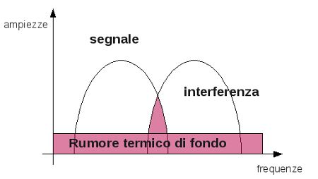
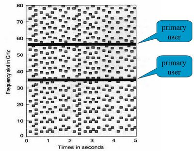
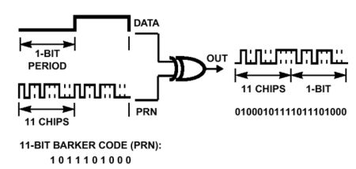
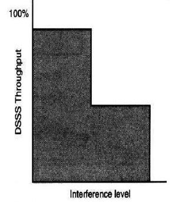
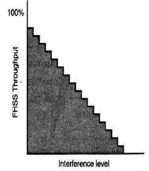

Torna alla pagina di Protocolli avanzati di rete
:: Protocolli avanzati di rete - Appunti del 20 Aprile ::
Tutte le immagini di questa pagina sono prese dalle slide del prof Damiani
Introduzione alle reti wireless
Per trasmettere dati con tecniche ad onda libera bisogna accordarsi sia sulle modulazioni che sul processo di riserva della banda, ovvero sulle modalità di occupazione delle frequenze. Vale la pena ricordare che queste ultime vanno intese come risorse pubbliche la cui distribuzione è regolamentata da organismi più o meno istituzionali. In particolare è previsto che per utilizzare una portante fino ai 2 MHertz (esclusi) di frequenza bisogna avere una concessione che mi autorizzi, mentre da quel valore in su non è più richiesta. La fregatura sta nel fatto che oltre i 2 MHz non ho più nessuna garanzia sulla portante, cioè non ho la certezza di trovarla sempre disponibile. Ricapitolando, il wireless dati di una rete telefonica è messo a disposizione da un operatore che ha comprato una licenza e che mi dà garanzie sulla trasmissione, mentre quello di una rete privata è confinato in locale (su un'area ristretta) ed è ad esempio il mio router o il cordless di casa.
La porzione di banda libera delle concessioni è molto grande, anche se molte "fette" sono tuttora occupate da apparati di telecomunicazione militare in dismissione. Notare che non si tratta sempre delle stesse bande, ma la loro entità varia da nazione in nazione.
Prima di arrivare alla parte che ci interessa, citiamo almeno lo standard infrarossi. Gli infrarossi rappresentano l'estremo superiore della banda utilizzabile senza concessioni, e la tecnologia che li utilizza è molto semplice ma ha un limitato raggio di azione ed è molto sensibile alla temperatura. Questo tipo di trasmissione è infatti LOS (Line Of Sight), cioè richiede che non ci siano ostacoli tra i dispositivi comunicanti, o in altre parole che si possa tirare una retta immaginaria che li unisca.
Per quanto riguarda le modulazioni abbiamo le tre solite:
- modulazione in ampiezza, che è quella usata sull'ultimo miglio, come ad esempio per l'ADSL
- modulazione in frequenza, molto usata nelle reti locali
- modulazione in fase, tipica delle reti ottiche
Ok, è tutto molto bello, ma quando passiamo alla parte utile? Ora.
Microwave band
La microwave band (banda delle microonde) è quella più sfruttata, e si divide in quella con licenza (che serve cellulari, PCS, ...) e quella senza licenza o UMB. Noi ci concentreremo prevalentemente sulla seconda, nella quale ci sono le portanti utilizzate dagli standard di rete locale in onda libera. Il fatto che il suo bacino di utenza potenziale sia molto più alto rispetto alla sua corrispondente con licenza, rende necessario prendere precauzioni contro le interferenze delle apparecchiature di terzi che operano nelle vicinanze. Nota di folklore: la UMB è chiamata anche banda ISM, perché inizialmente era usata per fini "Industrial, Scientific and Medical".
Perché si raggiunga una buona qualità di trasmissione bisogna dunque fare un minimo di ingegneria spettrale, che si basa in genere sullo spread spectrum: estendo, spalmo, distribuisco lo spettro su un intervallo più grande di frequenza. Dobbiamo quindi intervenire sul segnale a livello fisico (agli altri livelli non frega assolutamente niente dei problemi spettrali), la sola modulazione non basta a risolvere la questione.
Il problema dell'onda libera è che la sua qualità dipende molto dalle condizioni ambientali (rumore di fondo) e dalle interferenze con altre sorgenti. Rappresentiamo il tutto in un grafico ampiezza-frequenze in scala logaritmica:

Alcune osservazioni:
- il rumore termico di fondo è una variabile casuale distribuita in modo uniforme e che dipende fortemente dalla temperatura
- la parte colorata rappresenta la potenza del rumore
- un indicatore importante del rumore è l' SNR, ovvero il rapporto tra la potenza del segnale e quello del rumore
L'ingegneria dello spettro deve minimizzare la sovrapposizione del rumore, e ovviamente non può intervenire su altro che il segnale. Come? Abbiamo due tecniche: l' FHSS e il DSSS. Vediamole bene.
FHSS
La maggior parte delle reti locali wireless usano la banda UMB come utenti secondari, quindi per non subire le interferenze dei primari devono adottare tecniche di Spread Spectrum. Con la FHSS (Frequency Hopping Spread Spectrum) abbiamo a disposizione un certo numero di portanti, e noi dobbiamo codificare una sequenza con cui utilizzarle nel tempo. In altre parole vogliamo fare in modo che il dispositivo cambi istante per istante la frequenza con cui sta inviando informazioni, con un ordine che possiamo stabilire e che lo identificherà. Perché fare tutto questo? Perché cambiando portante spostiamo incessantemente lo spettro, riducendo così la probabilità che esso interferisca con quello delle altre sorgenti. Ecco dunque perché si parla di spread spectrum: sto estendendo lo spettro su un intervallo più grande di frequenze. Evidentemente questa tecnica non ha nessuna utilità per limitare le interferenze con il rumore termico, dato che quest'ultimo è uguale ovunque.
La sequenza con cui passo da una portante all'altra costituisce la chiave (o parola) del canale, e come abbiamo già anticipato sarà una caratteristica che lo identificherà.
La banda destinata all'UMB è di 80 MHz ed ogni portante è separata dall'altra da 1 MHz, quindi se la matematica non è un'opinione ho a disposizione 80 portanti. Una cosa molto importante da capire è che FHSS non fa Frequency Division Multiplexing. Se infatti stessi facendo FDM potrei servire solo 80 apparecchi, mentre con la Frequency Hopping molti di più.
Con 15 canali FHSS i nostri trasmettitori continueranno a saltare in uno spazio di 1/80 con un ciclo di frequenza pari a 15.
Consideriamo il seguente scenario, in cui abbiamo due utenti primari oltre ai normali secondari:

Le righe orizzontali rappresentano il fatto che due dispositivi stanno occupando tutta la banda su una portante. Contrariamente a quanto si possa pensare ciò non interferisce più di quel tanto con gli altri: noi per loro disturbiamo per 1/15 della nostra potenza di segnale; loro ci disturbano quel poco che ci fa perdere i 2/80 di throughput (in percentuale).
DSSS
La tecnica DSSS (Direct Sequence Spread Spectrum) mira ad effettuare un condizionamento della modulante, così che lo spettro modulato cambi struttura. Se infatti alziamo in frequenza la modulante, che quindi avrà un maggior numero di variazioni e di armoniche, otterrò un segnale modulato con uno spettro più basso e più largo. Tutto ciò riduce sicuramente l'area di intersezione con gli altri segnali, ma aumenta quella con il rumore termico, che per sua stessa natura è basso e largo; ne consegue che il DSSS funziona bene in ambienti con basso rumore.
Come si interviene sulla struttura del modulato? Mettendo il segnale di ingresso in XOR (vedi qui) con una parola che aumenti il numero medio di transizioni per secondo; una tipica parola utilizzata è quella di Barker.

Un'attività di questo tipo può essere considerata come premodulazione.
Devo usare sempre la stessa parola o devo usare parole diverse? Beh, in uno scenario come quello che abbiamo studiato prima (più portanti utilizzate in un ambiente limitato da dispositivi primari o secondari) una parola è più che sufficiente. Se invece dobbiamo gestire un protocollo UMTS o HDSPA, una tecnica di ricerca prevede di dare la stessa portante a più apparecchi, ma fornire ad ognuno di essi parole diverse con la garanzia che siano il più diverse possibile dalle altre. In questo modo ci saranno sicuramente delle sovrapposizioni, ma avendo ogni segnale una forma diversa non saranno mai totali. Questa tecnica sfrutta l'effetto cocktail party.
Degradazioni
Come degradano le prestazioni a livello fisico? Dipende dalla tecnica spread spectrum che abbiamo adottato.
La degradazione nel DSSS è non lineare, perché se aumento il numero di sorgenti di interferenza arriverò ad una soglia in cui avviene il crollo, cioè perderò praticamente del tutto il mio segnale.

Il FHSS ha invece un legame lineare con le sorgenti di interferenza, dunque anche il suo degradamento sarà lineare.

Torna alla pagina di Protocolli avanzati di rete